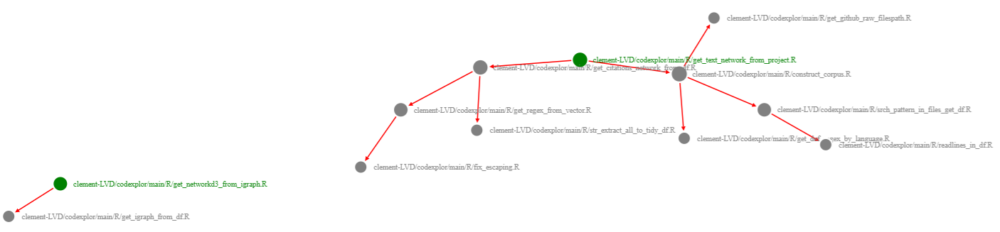

🧰🔧🔨 codexplor is a WIP 🧰🔧🔨
codexplor offers R functions dedicated to explore, analyze and monitor a programming project.
Given a programming project, codexplor compute standardized text mining metrics and dataviz’ about the project : get rid of global complexity with a global network of local dependancies, and assess local complexity with document-level metrics.
codexplorhelp me to figure out the big picture of a programming project faster, and to manage it more efficiently. I’ve used it, for example, to pinpoint where to start a polishing loop, to identify all the functions impacted by upcoming changes, or to assess the impact of the dev loop on the project.
Installation
You can install the development version of codexplor with
devtools::install_github("clement-LVD/codexplor")Example : dataviz’ of internal dependancies
net <- get_text_network_from_project(repos = "clement-LVD/codexplor")
# Turn a github repo into a network of internal dependancies
get_networkd3_from_igraph(net) # Produce an interactive dataviz'Will return an interactive dataviz’ of the internal dependancies within codexplor :

Features
codexplor will compute several metrics on a programming project in order to gain global and local insights.
| Computed Methods | Global insights | Local insights on files |
|---|---|---|
| Appreciate global complexity and figure out the pig picture | Reveal critical files, e.g., major internal dependancies | |
| Reveal clusters of ‘difficult-to-read’ files | Assess each file with text-mining metrics, e.g., length and files readability |
Vignettes
WIP [🔧🔨]
codexplor offers functions that are dedicated to analyze a programming project, accordingly to several tools that perform a part of the analysis. codexplor also offers helper functions, e.g., for create and filter a network with the igraph package.
| Analyze a programming project (High-level functions) | Low-level & helper functions |
|---|---|
Construct a network of internal dependancies : vignette of get_text_network_from_project
|
Construct a corpus : vignette of construct_corpus
|
Manage and filter igraph object : vignette of helper functions for igraph object
|